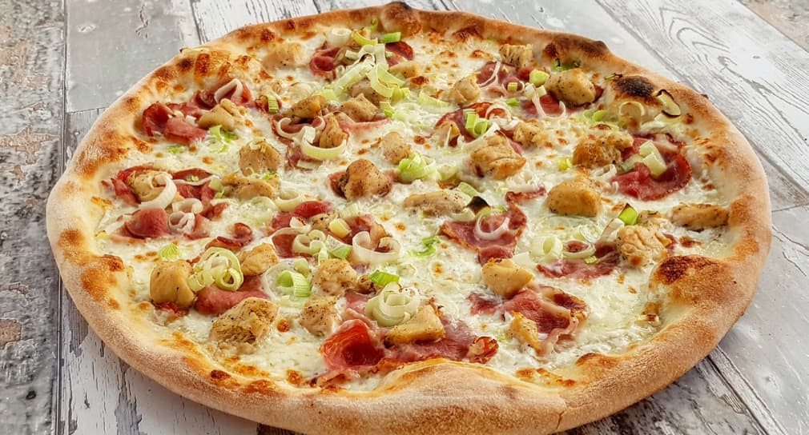
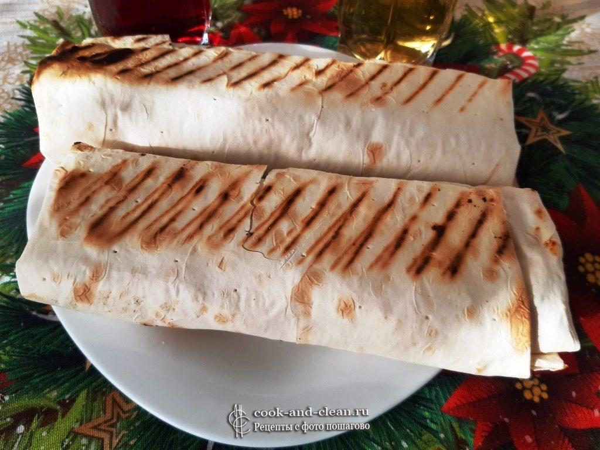
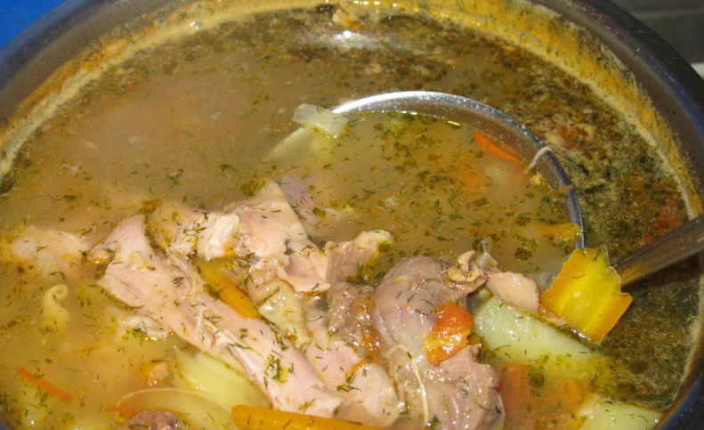

| имя |
фамилия |
| герман |
ритт |
| Артур |
Воробьёв |
Пицца
- Для приготовления нам потребуется:
- колбаса, ветчина, куриное мясо
- рыба, креветки, мидии и другие морепродукты
- грибы
- лук, перец, баклажаны, артишоки
- ананас, авокадо
- оливки, каперсы
- варёные яйца
- чеснок, перец чили, паприка
- томатная паста
- оливковое масло
- специи и травы

источник пиццы
Шаурма
- Для приготовления нам потребуется:
- Лаваш
- Курица
- Масло растительное
- Масло сливочное
- Лук красный
- Огурец
- Огурец соленый
- Помидоры
- Кинза
- Лук зеленый
- Соус барбекю
- Майонез
- Куркума

источник шавухи
Cупец куриный
- Для приготовления нам потребуется:
- Куриное мясо
- Картофель
- Морковь
- Репчатый лук
- Вермишель
- Зелень
- Соль по вкусу
- Молотый белый перец по вкусу
- Молотый черный перец по вкусу
- Сушеный эстрагон

источник супа
German R.
Artur V.